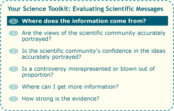

In paperback mysteries, the answer to this question is withheld until the last page …

… but when evaluating a media message about science, it's one of the first things to consider:
- What is the source of this message? Is it a sensational article in Cosmopolitan, a report from the New York Times, a feature in a science publication aimed at the general public like Discover, or an original journal article? Each of these sources will provide you with a different level of information — and probably, a different level of fidelity to the original science. So if you are reading a short summary in your local newspaper, don't assume that you've got the whole story!
- Does that source have an agenda or goal? All media messages have goals, which can affect the information presented. For example, scientific messages that appear in advertising (e.g., "Clinically proven to reduce wrinkles") are aimed at selling a product and are unlikely to give the full story. Some publications are aimed at rallying readers around particular issues, like environmental activism, anti-environmentalism, or health issues, and so may present a skewed view of the science. If you really want the whole scoop on a scientific issue, it's best to look for a source whose main goal is to explain the science involved. Science publications aimed at the general public provide this sort of information. As we've seen in other sections of this website, scientists strive to be unbiased in their scientific work, but occasionally the media's interpretation of this work introduces bias.
An original piece of scientific research may be interpreted many times over before it reaches you. First, the researchers will write up the research for a scientific journal article, which may then be adapted into a simplified press release, which will be read by reporters and translated yet again into a newspaper, magazine, or internet article — and so on. Just as in a game of telephone, errors and exaggerations can sneak in with each adaptation.
GETTING IT WRONG EVERY WHICH WAY
In 2004, an international group of researchers modeled the effect of predicted climate change over the next 50 years, and reported that this amount of change might eventually cause 15-37% of a select group of terrestrial species to go extinct. It was simple, straightforward science. However, much of the press coverage that followed was both sensational and inaccurate. For example, the Guardian ran the headline:
An unnatural disaster:
- Global warming to kill off 1m species
- Scientists shocked by results of research
- 1 in 10 animals and plants extinct by 2050
In fact, most newspaper reports got it wrong, frequently suggesting that over a million species would go extinct by 2050 — and not, as the science implied, that over a million species would be sentenced to extinction by 2050 and would actually die off afterwards. In addition, many websites picked up the story, and as one might expect, conservation-oriented websites tended to run more sensationalized versions of the story, and websites with an anti-environmental bent tended to dismiss the story. In this case, it's clear that the media source of the story made a big difference in the information offered to readers.
Our sample article on global warming seems to have been based on an interview with a key scientist and possibly also a press release. However, no specific scientific publication (e.g., a journal article) is cited, which makes it difficult to learn more about this work. On the plus side, we have no particular reason to believe that a major newspaper or the author would have any agenda other than to inform readers of an interesting development in science.